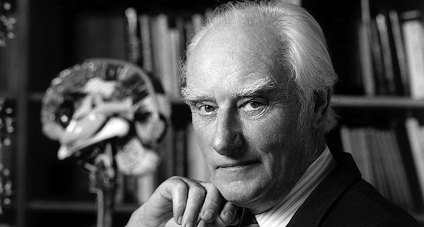

Francis Crick’s good luck revolutionized biology
When Francis Crick was 31, he decided he needed to change his luck. As a graduate student in physics during World War II, his research hadn’t gone so well; his experiment was demolished by a bomb. To beat the war, he joined it, working on naval warfare mines for the British Admiralty.
After the war, he sought a new direction.
“There are lots of ways of being unlucky,” Crick told me in an interview in 1998. “One is sticking to things too long. Another is not adventuring at all.”
He decided to adventure.
Molecular biologists everywhere will celebrate that decision on June 8, the centennial of Crick’s birth, in Weston Favell, Northampton, England, in 1916.
“Crick was one of the central figures, one might say the central figure, in the molecular revolution that swept through biology in the latter half of the 20th century,” science historian Robert Olby wrote in a biographical sketch.
In 1953, at the University of Cambridge, Crick and his collaborator James Watson figured out how life’s most important molecule, deoxyribonucleic acid, was put together. DNA, the stuff that genes are made of, became the most famous of biological molecules. Today the image of its double helix structure symbolizes biology itself. It would be easy to make the case that discovering DNA’s structure was the single greatest event in the history of biology — and always will be. In 1962, Watson and Crick won the Nobel Prize for their work (which was, of course, greatly aided by X-ray diffraction imagery from Rosalind Franklin, who unfortunately died before the Nobel was awarded).
Crick’s DNA adventure began at a time when molecular biology was ripe for revolution. But Crick didn’t know that. His choice was lucky.
“I had no idea when I started that molecular biology would advance so fast,” he said. “No idea at all.”
In fact, Crick very nearly chose a different path. His interest in genes was equaled by his curiosity about the brain. Both were topics that he liked to gossip about.
“But I didn’t know enough about either subject,” he said. He just knew a little bit more about biochemistry.
“I thought ‘Well look, I have a training in physics and I know a bit of chemistry, I don't know anything about the brain.’” So he decided it would be more sensible to start with genes.
“I thought that problem of what genes were and how they replicate and what they did would last me the rest of my life,” he said.
As it happened, genes did occupy him for a couple of decades. Crick made major contributions to elucidating the genetic code during that time. But he never forgot his interest in the brain, and more specifically, consciousness. In the 1970s, he moved from England to California, where he began consciousness research in San Diego at the Salk Institute for Biological Studies.
Consciousness turned out to be a much tougher problem than understanding genes. In retrospect, Crick could see why.
With genetics, “what really made the thing was the simplicity of the double helix. It wrote the whole research program,” he said. “It probably goes back to near the origin of life, when things had to be simple.” Consciousness appeared on the scene only much later, after the evolution of the brain’s vast complexity.
Nevertheless, Crick perceived parallels between genetics and consciousness as subjects for scientific inquiry. As the 20th century came to an end, he mused that consciousness as a concept remained vague — researchers did not all agree about what the word meant. The situation with genes had at one time been similar.
“In a sense people were just as vague about what genes were in the 1920s as they are now about consciousness,” Crick said. “It was exactly the same. The more professional people in the field, which was biochemistry at that time, thought that it was a problem that was too early to tackle. And I think they were right in the ’20s.”
At the end of the 20th century, research on consciousness found itself in much the same state.
“Everybody agrees that it’s an interesting question,” Crick said, “but there are two points of view among scientists: One is that it isn’t a scientific question and is best left to philosophers. And the other one is that, even if it’s a scientific question, it’s too early to tackle it now.”
Crick tackled it anyway. Until his death in 2004, he worked vigorously on the subject with his collaborator Christof Koch, making substantial inroads into identifying the brain activity associated with conscious awareness. Crick was not lucky enough to solve the problem of consciousness, but he perhaps brought the arrival of that solution a little closer.
Read More At ScienceNews